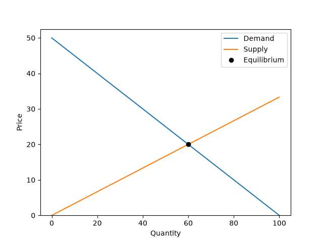

第 7 章: Matplotlib による図示¶
7.1 この章の地図¶
第 2 部の最初の章です。これまで数値で確かめてきた需要曲線と供給曲線を、図として描きます。さらに、余剰と課税の効果を、計算と図の両方で確かめます。
| 項目 | 内容 |
|---|---|
| 経済学の題材 | 市場均衡、消費者余剰・生産者余剰、従量税と死荷重（マインドマップ 5-3） |
| 使う Python の機能 | matplotlib（Figure と Axes）、データクラス（dataclass）、タプル |
| 新しく導入するライブラリ | matplotlib（図を描く） |
| 完成形 | equilibrium、consumer_surplus、producer_surplus、equilibrium_with_tax、draw_market |
経済学の式とコードの対応¶
需要曲線 Q = a − bP、供給曲線 Q = c + dP を使います。第 6 章までと同じ値（a = 100、b = 2、c = 0、d = 3）です。
| 経済学 | 式 | コード |
|---|---|---|
| 均衡価格 | P* = (a − c) ÷ (b + d) | equilibrium の 1 つ目の戻り値 |
| 均衡数量 | Q* = a − bP* | equilibrium の 2 つ目の戻り値 |
| 消費者余剰 | ½ × Q* × (a ÷ b − P*) | consumer_surplus |
| 生産者余剰 | ½ × Q* × (P* − (−c ÷ d)) | producer_surplus |
| 従量税（売り手に課す） | 買い手の価格 Pc = (a − c + d·t) ÷ (b + d)、売り手の受取 Ps = Pc − t | equilibrium_with_tax |
| 死荷重 | ½ × t × (Q* − 課税後の数量) | TaxEquilibrium.deadweight_loss |
縦軸を価格、横軸を数量にします。経済学の教科書と同じ向きです。そのため、需要曲線は P = (a − Q) ÷ b のように、式を P について解いて描きます。
7.2 予想する¶
需要曲線 Q = 100 − 2P、供給曲線 Q = 3P のとき、紙に図を描いて、次を求めてください。
- 均衡価格と均衡数量は、いくつですか
- 消費者余剰（需要曲線と価格の間の三角形）は、いくつですか。縦軸の切片は、Q = 0 のときの価格 100 ÷ 2 = 50 です
- 売り手に 1 単位あたり 5 の税を課すと、買い手が払う価格と、売り手の受取は、いくつになりますか。どちらの負担が大きいと思いますか
答えは、均衡が価格 20・数量 60、消費者余剰が ½ × 60 × (50 − 20) = 900 です。税については、先に予想を書いてから、次へ進んでください。
7.3 Matplotlib の基本¶
Figure と Axes¶
matplotlib では、図全体を Figure、その中の 1 つの絵を Axes と呼びます。plt.subplots() で、この 2 つを同時に作ります。
import matplotlib.pyplot as plt
fig, ax = plt.subplots()
ax.plot([0, 60, 100], [50, 20, 0], label="Demand") # 線を描く
ax.set_xlabel("Quantity") # 横軸の名前
ax.set_ylabel("Price") # 縦軸の名前
ax.legend() # 凡例
fig.savefig("market.png") # ファイルに保存する
「図を作って、その部品（ax）に命令する」というこの書き方を、オブジェクト指向の書き方と呼びます。複数の図を描くときも、どの図に描くかを間違えません。
日本語の表示¶
matplotlib の標準のフォントには日本語の字形がないので、ラベルを日本語にすると文字が表示されません。本書の図は、英語のラベル（Quantity、Price など）にしています。日本語を使いたいときは、日本語のフォントを設定します（練習問題の「多様」を参照）。
データクラス¶
関連する複数の値をまとめて返したいときは、データクラスを使います。次は説明用に、項目を 3 つに減らした形です（完成形は 7.4 節にあります）。
from dataclasses import dataclass
@dataclass(frozen=True)
class TaxEquilibrium:
consumer_price: float
producer_price: float
quantity: float
frozen=True は、作ったあとに値を書き換えられない、という指定です。result.quantity のように、名前で値を取り出せます。
7.4 Red → Green → Refactor¶
均衡と余剰¶
# 需要曲線 Q = 100 - 2P、供給曲線 Q = 3P
MARKET = {
"demand_intercept": 100,
"demand_slope": 2,
"supply_intercept": 0,
"supply_slope": 3,
}
def test_均衡価格は20で均衡数量は60() -> None:
assert equilibrium(**MARKET) == pytest.approx((20, 60))
def test_消費者余剰は需要曲線と価格の間の三角形の面積() -> None:
# 需要曲線の縦軸の切片は 100 / 2 = 50。底辺 60、高さ 50 - 20 = 30
assert consumer_surplus(**MARKET) == pytest.approx(900)
def test_生産者余剰は価格と供給曲線の間の三角形の面積() -> None:
# 供給曲線の縦軸の切片は 0。底辺 60、高さ 20 - 0 = 20
assert producer_surplus(**MARKET) == pytest.approx(600)
**MARKET は、辞書の中身を、名前付きの引数として展開する書き方です。同じ需要曲線・供給曲線を、何度も書かずに済みます。
def equilibrium(
demand_intercept: float,
demand_slope: float,
supply_intercept: float,
supply_slope: float,
) -> tuple[float, float]:
"""均衡価格と均衡数量を返す。a - bP = c + dP を P について解く。"""
price = (demand_intercept - supply_intercept) / (demand_slope + supply_slope)
quantity = demand_intercept - demand_slope * price
return price, quantity
def consumer_surplus(
demand_intercept: float,
demand_slope: float,
supply_intercept: float,
supply_slope: float,
) -> float:
"""消費者余剰: 需要曲線と均衡価格の間の三角形の面積。"""
price, quantity = equilibrium(
demand_intercept, demand_slope, supply_intercept, supply_slope
)
highest_price = demand_intercept / demand_slope
return 0.5 * quantity * (highest_price - price)
def producer_surplus(
demand_intercept: float,
demand_slope: float,
supply_intercept: float,
supply_slope: float,
) -> float:
"""生産者余剰: 均衡価格と供給曲線の間の三角形の面積。"""
if supply_intercept > 0:
raise ValueError("供給曲線の切片が正の場合は、この関数では求められない")
price, quantity = equilibrium(
demand_intercept, demand_slope, supply_intercept, supply_slope
)
lowest_price = -supply_intercept / supply_slope
return 0.5 * quantity * (price - lowest_price)
equilibrium は、価格と数量の 2 つの値を、まとめて（タプルで）返します。price, quantity = equilibrium(...) のように、2 つの変数に分けて受け取れます。
producer_surplus が、供給曲線の切片が正のときを受け付けないのは、そのとき価格が 0 でも供給量があり、三角形の面積では表せないからです。これは、この章の三角形による計算の限界です。
従量税と死荷重¶
売り手に 1 単位あたり 5 の税を課します。買い手の払う価格を P とすると、売り手の受取は P − 5 です。需要量と供給量が等しい条件 a − bP = c + d(P − t) を、P について解きます。
def test_従量税を課すと買い手の価格は上がり売り手の受取は下がる() -> None:
result = equilibrium_with_tax(**MARKET, tax=5)
assert result.consumer_price == pytest.approx(23)
assert result.producer_price == pytest.approx(18)
assert result.quantity == pytest.approx(54)
def test_従量税の税収は税額かける取引量() -> None:
assert equilibrium_with_tax(**MARKET, tax=5).tax_revenue == pytest.approx(270)
def test_死荷重は取引量の減少分と税額でできる三角形の面積() -> None:
# 底辺は取引量の減少 60 - 54 = 6、高さは税額 5
assert equilibrium_with_tax(**MARKET, tax=5).deadweight_loss == pytest.approx(15)
@dataclass(frozen=True)
class TaxEquilibrium:
"""従量税を課したときの市場均衡。"""
consumer_price: float
producer_price: float
quantity: float
tax_revenue: float
deadweight_loss: float
def equilibrium_with_tax(
demand_intercept: float,
demand_slope: float,
supply_intercept: float,
supply_slope: float,
tax: float,
) -> TaxEquilibrium:
"""売り手に 1 単位あたり tax の従量税を課したときの均衡を返す。
買い手の払う価格を P とすると、売り手の受取は P - tax になる。
a - bP = c + d(P - tax) を P について解く。
"""
if tax < 0:
raise ValueError("税額は 0 以上でなければならない")
consumer_price = (demand_intercept - supply_intercept + supply_slope * tax) / (
demand_slope + supply_slope
)
quantity = demand_intercept - demand_slope * consumer_price
_, quantity_without_tax = equilibrium(
demand_intercept, demand_slope, supply_intercept, supply_slope
)
return TaxEquilibrium(
consumer_price=consumer_price,
producer_price=consumer_price - tax,
quantity=quantity,
tax_revenue=tax * quantity,
deadweight_loss=0.5 * tax * (quantity_without_tax - quantity),
)
結果は、買い手の価格が 23（税なしより 3 上がる）、売り手の受取が 18（2 下がる）、取引量が 54（6 減る）、税収が 270、死荷重が 15 です。
予想した問いの答えは、「買い手の負担が 3、売り手の負担が 2」です。税を課した側（売り手）より、買い手の方が多く負担していることに注意してください。誰に課税しても、負担の割合は同じです。需要の傾き b = 2 と供給の傾き d = 3 の比で決まり、買い手の負担割合は d ÷ (b + d) = 3 ÷ 5 = 60% です。
死荷重は、税のせいで失われた取引から生まれるはずだった余剰です。次のテストで、「課税前の余剰の合計」と「課税後の余剰の合計と税収の合計」の差が、死荷重と等しいことを確かめます。
def test_余剰の合計と税収の合計は課税前より死荷重の分だけ減る() -> None:
tax = 5
result = equilibrium_with_tax(**MARKET, tax=tax)
# 課税後の消費者余剰: 底辺 54、高さ 50 - 23。生産者余剰: 底辺 54、高さ 18 - 0
consumer = 0.5 * 54 * (50 - result.consumer_price)
producer = 0.5 * 54 * (result.producer_price - 0)
before = consumer_surplus(**MARKET) + producer_surplus(**MARKET)
after = consumer + producer + result.tax_revenue
assert before - after == pytest.approx(result.deadweight_loss)
課税前の余剰の合計は 900 + 600 = 1500 です。課税後は、消費者余剰 729、生産者余剰 486、税収 270 で合計 1485 となり、差の 15 が死荷重と一致します。
図を描く¶
図そのものは、ピクセルを比べるのではなく、「描いた線のデータが正しいか」をテストします。
def curve_points(line: Line2D) -> dict[float, float]:
"""線の (数量, 価格) の組を、数量をキーにした辞書にする。"""
points: Any = line.get_xydata()
return {float(x): float(y) for x, y in points}
def test_市場の図には需要曲線と供給曲線の2本の線がある() -> None:
fig = draw_market(**MARKET)
ax = fig.axes[0]
assert isinstance(fig, Figure)
assert [line.get_label() for line in ax.lines[:2]] == ["Demand", "Supply"]
def test_需要曲線は数量が0のとき価格50で数量60のとき価格20() -> None:
ax = draw_market(**MARKET).axes[0]
points = curve_points(ax.lines[0])
assert points[0] == pytest.approx(50)
assert points[60] == pytest.approx(20)
def draw_market(
demand_intercept: float,
demand_slope: float,
supply_intercept: float,
supply_slope: float,
) -> Figure:
"""需要曲線・供給曲線・均衡点を描いた図を返す。"""
quantities = [float(q) for q in range(int(demand_intercept) + 1)]
# 需要曲線 Q = a - bP を P について解くと P = (a - Q) / b
demand_prices = [(demand_intercept - q) / demand_slope for q in quantities]
# 供給曲線 Q = c + dP を P について解くと P = (Q - c) / d
supply_prices = [(q - supply_intercept) / supply_slope for q in quantities]
price, quantity = equilibrium(
demand_intercept, demand_slope, supply_intercept, supply_slope
)
fig, ax = plt.subplots()
ax.plot(quantities, demand_prices, label="Demand")
ax.plot(quantities, supply_prices, label="Supply")
ax.plot([quantity], [price], "o", color="black", label="Equilibrium")
ax.set_xlabel("Quantity")
ax.set_ylabel("Price")
ax.set_ylim(bottom=0)
ax.legend()
plt.close(fig)
return fig
plt.close(fig) は、図を画面に出さずに、関数から返すための後始末です。テストのときは、画面を開かない設定（test/conftest.py の matplotlib.use("Agg")）にしています。
図を保存するには、次のコマンドを実行します。
cd apps/economics-programming/python
uv run python -c "from lib.chapter07.plot import draw_market; draw_market(100, 2, 0, 3).savefig('market.png')"

実行結果¶
cd apps/economics-programming/python
uv run pytest
77 passed
この 77 件には、第 1〜8 章のテストを含みます。
7.5 規則で言うと¶
- 図を描く関数は、図（
Figure）を返す。 画面に出す・ファイルに保存する、は呼び出す側が決める。こうすると、テストもできる - 図は、データが正しいかをテストする。 描いた線の座標を調べる。見た目の確認は、人が図を見て行う
- 面積の計算は、図形に分けて式にする。 余剰は三角形、死荷重も三角形。底辺と高さを、テストの注釈に書く
混同しやすい点を、表にまとめます。
| 混同しやすい点 | 違い |
|---|---|
| 売り手に課税 / 買い手に課税 | 負担の割合は同じ。法律上の納税者は、経済上の負担者と一致しない |
| 税収と死荷重 | 税収は政府に移る（失われない）。死荷重は、取引が減って誰にも渡らず失われる分 |
| 数量が縦軸 / 価格が縦軸 | 式（Q = a − bP）は数量が左辺だが、図は価格を縦軸にする。式を P について解いてから描く |
死荷重は、税額の 2 乗に比例して増えます。税額 5 のとき 15 ですが、税額を 2 倍の 10 にすると、取引量は 48 になり、死荷重は 60（4 倍）になります。
このモデルが成り立たない場面¶
この章の余剰は、需要曲線と供給曲線が直線であることを使った、三角形の面積です。曲線の形が直線でなければ、面積は積分で求めます。また、課税で買い手の行動が変わらない（需要が完全に非弾力的）なら、死荷重は 0 になります。需要が完全に非弾力的な場面では、この章の式（b > 0）が成り立ちません。
7.6 練習問題¶
| 種類 | 問題 |
|---|---|
| 想起 | 本文を閉じて、draw_market を自分で書いてください。凡例と軸の名前を忘れないようにします |
| 生成 | 解説を見る前に、税額 10 のときの買い手の価格・取引量・死荷重を、手計算してから、テストを書いてください（26、48、60 になります） |
| 多様 | 需要を Q = 120 − 2P に変えて、均衡と余剰を手計算し、テストで確かめてください（価格 24、数量 72、消費者余剰 1296、生産者余剰 864）。余裕があれば、日本語のフォントを設定して、ラベルを日本語にしてみてください |
| 交互 | 第 2 章の弾力性を使って、均衡点（価格 20、数量 60）での、需要の価格弾力性（b × P ÷ Q）と供給の価格弾力性（d × P ÷ Q）を求め、買い手の負担割合（60%）との関係を説明してください（0.67 と 1 です） |
7.7 振り返り¶
- 税の負担についての予想は、当たりましたか。当たらなかったなら、どこで考え違いをしましたか
- 図を描いてみて、数値だけでは気づかなかったことはありましたか
- 図のテストを、データで行うことの良い点と悪い点は何でしょうか
7.8 まとめ¶
- matplotlib の
FigureとAxesを使って、需要曲線・供給曲線を描いた - 消費者余剰・生産者余剰・従量税・死荷重を、関数にして、手計算の値とテストで確かめた
- 税の負担は、課税される側ではなく、需要と供給の傾き（弾力性）で決まることを確かめた
次の章では、乱数を使ったシミュレーションで、需要のばらつきを扱います。